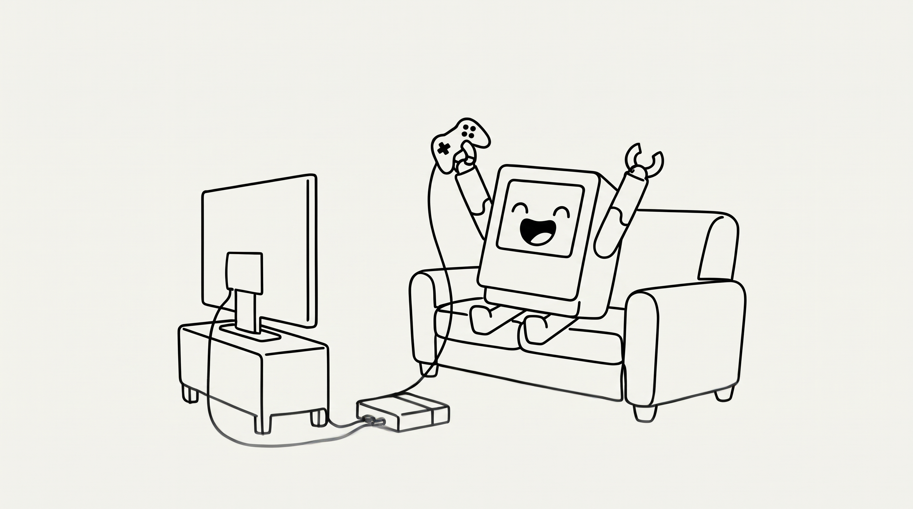
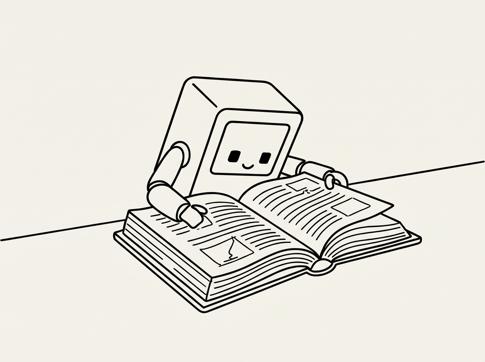

Escriu una tasca per començar...

Tasca completada!No hi ha pensaments aparcats encara.

En Focus
Temps de Focus Intern
Carregant rutina...
Has completat la rutina de matí!
Carregant opcions de descans...
Personalitzar Hobbies
✨ Motor IA Local AuDHD Actiu
El desglossament de micro-passos en català funciona automàticament sense claus externes ni límits.